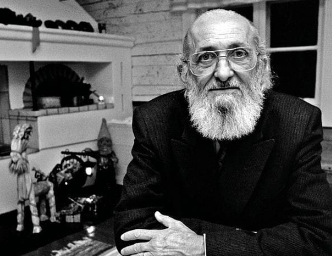
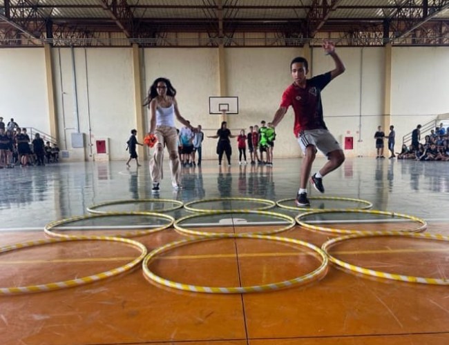
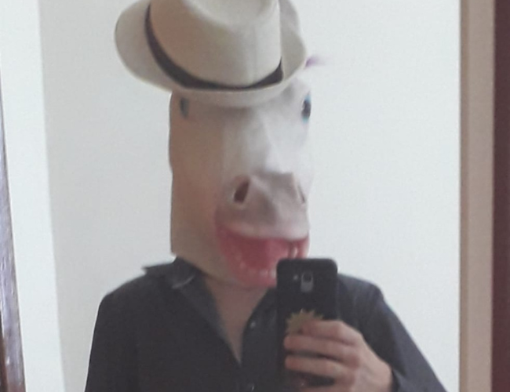
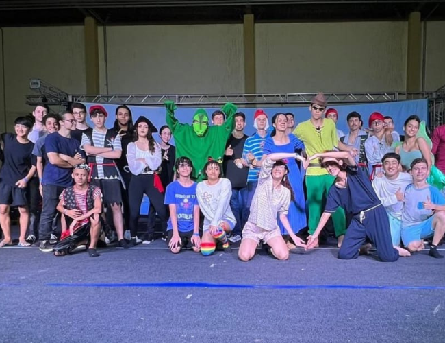
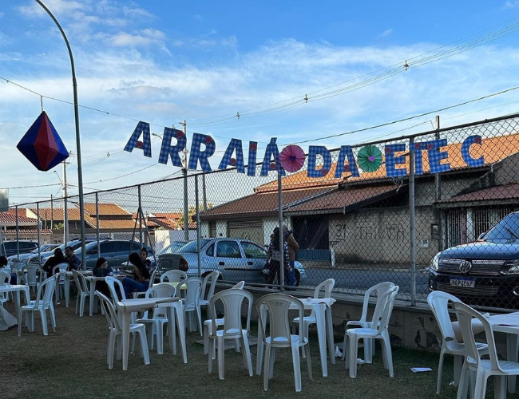
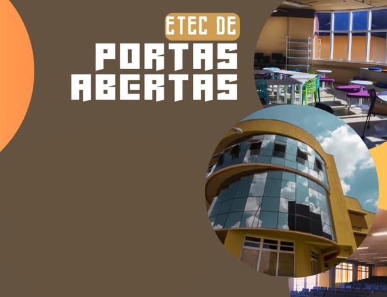

A ETEC Ferrucio Humberto Gazzetta é reconhecida não apenas pela excelência acadêmica, mas também pela ampla gama de eventos que promovem o desenvolvimento integral de seus alunos. A instituição realiza diversos eventos ao longo do ano, que podem ser categorizados em eventos internos e externos, cada um com objetivos específicos voltados para o enriquecimento da educação e formação dos estudantes.
Eventos Internos
Os eventos internos são planejados exclusivamente para os alunos da ETEC. Esses eventos têm como principal objetivo criar um ambiente de aprendizado e crescimento pessoal dentro da própria comunidade escolar. Entre os eventos internos, veja abaixo alguns dos eventos internos organizados pela instituição:
- Semana Paulo Freire
A Semana Paulo Freire é um evento anual de grande importância na
ETEC Ferrucio Humberto Gazzetta, dedicado a homenagear o legado do renomado educador brasileiro
Paulo Freire e a promover a reflexão sobre práticas educacionais inovadoras e inclusivas. Durante
essa semana, os alunos têm a oportunidade de organizar e participar de uma série de atividades, como
palestras, apresentações e workshops, que abrangem diversas áreas da educação.
A Semana Paulo Freire é uma oportunidade única para os alunos expandirem seus horizontes e adquirirem
conhecimentos que vão além do currículo tradicional. As atividades proporcionam uma visão mais ampla e
crítica sobre a educação e seu papel na formação de cidadãos conscientes e engajados.
Ao participar de palestras e workshops com especialistas e educadores convidados, os alunos são
expostos a novas ideias e práticas que podem inspirá-los em sua jornada acadêmica e profissional.
Além disso, a semana fortalece a comunidade escolar, promovendo um ambiente de colaboração e
aprendizado contínuo.

- Integração
A ETEC Ferrucio Humberto Gazzetta realiza anualmente um evento
interno muito especial chamado Integração, dedicado a acolher e integrar os novos alunos,
carinhosamente chamados de "bixos", ao ambiente escolar. Este evento é essencial para garantir que
os novos alunos se sintam bem-vindos, orientados e prontos para começar sua jornada educacional com
confiança e entusiasmo.
O evento de Integração inclui uma série de atividades dinâmicas e divertidas para promover a
socialização e o espírito de equipe entre os novos alunos e seus colegas veteranos. Entre essas
atividades estão jogos e competições esportivas, como futebol e vôlei, além de diversas brincadeiras
e gincanas que incentivam a interação de forma divertida e espontânea.
Um dos aspectos mais únicos e significativos do evento é o sistema de adoção de "bixos" por "bagaços"
(alunos do 2º ano) e veteranos (alunos do 3º ano). Cada bagaço forma uma dupla com um veterano para
adotar um bixo, apresentando a escola, explicando as rotinas e normas, e oferecendo suporte emocional
e acadêmico contínuo ao longo do ano.
O evento de Integração proporciona inúmeros benefícios tanto para os novos alunos quanto para os
veteranos. Para os bixos, a sensação de acolhimento e a redução da ansiedade são notáveis, além de
facilitar a formação de novas amizades e a compreensão do funcionamento da escola. Para os bagaços e
veteranos, o evento desenvolve habilidades de liderança, empatia e responsabilidade, enquanto
fortalece o espírito de comunidade e colaboração dentro da escola.

- Interclasse
Os interclasses na ETEC Ferrucio Humberto Gazzetta são eventos
que ocorrem no meio do ano, pouco antes das férias escolares. Durante essa semana,
os alunos têm a oportunidade de participar de diversas competições esportivas, promovendo um
ambiente de camaradagem e diversão.
Os interclasses oferecem um momento valioso de distração e descanso dos estudos, permitindo que os
alunos relaxem e recarreguem as energias. Além de aliviar o estresse acadêmico, esses jogos incentivam
a prática regular de exercícios físicos, fundamentais para a saúde e bem-estar dos estudantes.
Através das competições esportivas, os alunos desenvolvem habilidades importantes como trabalho em
equipe, espírito esportivo e disciplina. Participar dos interclasses também fortalece os laços entre
os colegas, promovendo a integração e a amizade dentro da comunidade escolar. Assim reafirmando o
compromisso com uma educação da nossa escola, que vai além da sala de aula, contribuindo para a
formação integral dos seus estudantes.

- Helloween
NEm nossa escola, o Halloween é um dos eventos
internos mais aguardados pelos alunos. Celebrado em um dia especial, a escola se transforma com
decorações temáticas e uma programação cheia de dinâmicas divertidas que engajam todos os estudantes.
Uma das principais atrações do nosso Halloween é a competição de fantasias. Os alunos são
incentivados a virem fantasiados, o que desperta a criatividade e a originalidade de cada um.
As competições premiam as fantasias mais criativas e elaboradas, promovendo um ambiente de alegria
e descontração.
Além das competições de fantasias, o evento inclui diversas atividades interativas e dinâmicas que
estimulam a participação e a integração entre os alunos. Jogos, gincanas e desafios temáticos garantem
que todos se divirtam e se envolvam, proporcionando um momento de descanso e diversão no meio da rotina
intensa do final de ano letivo.
O Halloween na ETEC Ferrucio Humberto Gazzetta não só oferece um alívio bem-vindo do estresse
acadêmico, mas também reforça a importância da criatividade e do trabalho em equipe. Ao promover um
ambiente alegre e colaborativo, a escola contribui para o bem-estar emocional dos alunos, fortalecendo
a comunidade escolar.

Eventos Externos
Além dos eventos internos, a ETEC Ferrucio Humberto Gazzetta também organiza eventos externos que são abertos à comunidade em geral. Esses eventos têm o duplo objetivo de integrar a instituição com a sociedade e de proporcionar aos alunos a oportunidade de demonstrar suas habilidades e conhecimentos para um público mais amplo. Alguns dos eventos externos feitos pela escola, são:
- Festival de Dança
No final de cada ano letivo, a ETEC Ferrucio Humberto Gazzetta
realiza seu aguardado Festival de Dança. Este evento é uma celebração do talento e da criatividade
dos alunos, organizado por turma, onde cada sala escolhe um tema para sua apresentação. Os alunos
são inteiramente responsáveis por todos os aspectos de sua performance, desde a criação das
coreografias até a escolha das músicas, confecção de cenários e figurinos.
A organização do festival exige um esforço conjunto significativo de cada turma. Os estudantes devem
arrecadar e administrar o dinheiro necessário para a realização dos cenários e figurinos, o que lhes
proporciona uma valiosa experiência em gestão financeira. Além disso, o processo de criação e ensaio
das coreografias, assim como a construção dos cenários, exige um alto nível de colaboração e trabalho
em equipe.
Este festival é mais do que uma mera apresentação artística; é uma oportunidade para os alunos
desenvolverem habilidades essenciais para a vida. A administração do tempo e dos recursos
financeiros, a capacidade de trabalhar em grupo e a necessidade de ser criativo são aspectos
fundamentais que são aprimorados durante a preparação para o evento. Cada etapa do processo contribui
para o crescimento pessoal e acadêmico dos alunos.
O Festival de Dança da ETEC Ferrucio Humberto Gazzetta é, portanto, uma experiência enriquecedora que
vai além da performance no palco. Ele promove a integração dos alunos, fortalece os laços de amizade e
ensina lições valiosas sobre responsabilidade, criatividade e trabalho em equipe, preparando os jovens
para os desafios futuros.

- Festa Junina
Alunos e corpo docente unem esforços para montar uma festa
tradicional e animada, onde cada detalhe é planejado com carinho. Barracas são montadas, e os alunos
se dedicam não apenas à produção das comidas típicas, mas também ao cuidado e à administração de
cada uma delas.
O diferencial dessa festa está na forma como o lucro é distribuído. Cada barraca representa algumas
salas participantes, e o dinheiro arrecadado é dividido entre elas. Esses fundos contribuem
diretamente para o financiamento do Festival de Dança da escola, fortalecendo ainda mais o espírito
de colaboração entre os estudantes.
Além das barracas com comidas típicas, a festa junina oferece uma variedade de brincadeiras
tradicionais, que garantem a diversão de todos os presentes. O evento é aberto ao público, permitindo
que amigos, familiares e membros da comunidade local participem e desfrutem da atmosfera festiva.
Os recursos obtidos com a venda de convites também são revertidos para a escola, contribuindo para
melhorias e investimentos em infraestrutura. Assim, a festa junina não apenas celebra as tradições
culturais, mas também desempenha um papel importante na sustentabilidade financeira da instituição,
fortalecendo o senso de comunidade e colaboração entre todos os envolvidos.

- Portas Abertas
O evento ETEC Portas Abertas é uma vitrine do talento e da
dedicação dos alunos da escola, onde seus trabalhos e projetos são expostos ao público. Acontecendo
anualmente no final do ano, geralmente em novembro, esse evento proporciona uma oportunidade única
para os visitantes conhecerem de perto o que está sendo produzido dentro da instituição.
Aberto a todos, o ETEC Portas Abertas atrai não apenas familiares e amigos dos alunos, mas também
pessoas interessadas em conhecer mais sobre os cursos oferecidos. Os projetos expostos refletem a
diversidade de áreas de estudo, desde artes visuais até engenharia, oferecendo aos visitantes uma
visão abrangente das habilidades e conhecimentos adquiridos pelos estudantes.
Muitos alunos ingressam na ETEC após visitarem o Portas Abertas e se impressionarem com a qualidade e
a criatividade dos trabalhos apresentados. Além disso, o evento serve como uma plataforma para que os
alunos possam ser descobertos por potenciais empregadores ou instituições de ensino superior, abrindo
portas para estágios, oportunidades de trabalho ou mesmo bolsas de estudo.
O ETEC Portas Abertas não apenas celebra o talento dos alunos, mas também fortalece os laços entre a
escola e a comunidade, promovendo a troca de conhecimentos e experiências. É um momento de orgulho
para todos os envolvidos e uma prova do compromisso da ETEC Ferrucio Humberto Gazzetta com a
excelência acadêmica e o desenvolvimento dos seus estudantes.
